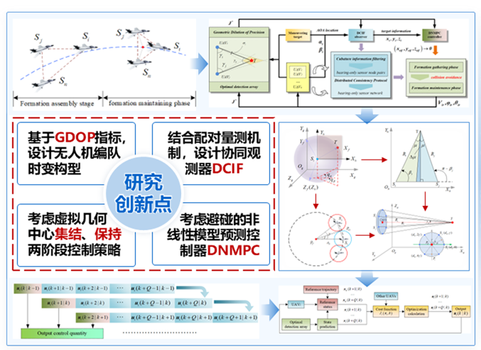
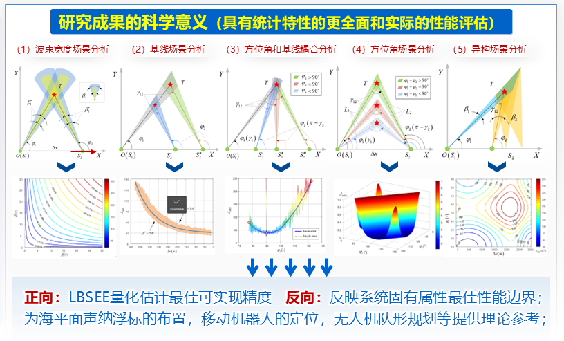
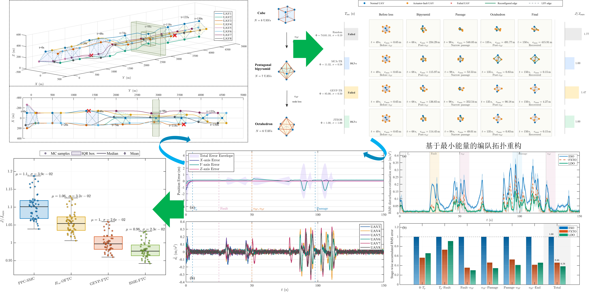

陈展（Zhan Chen）
Postdoctoral Researcher
College of Intelligence Science and Technology, National University of Defense Technology
Zhan Chen received his Ph.D. degree from the Northwestern Polytechnical University, Xi’an, China, in 2025. He is now a postdoctoral researcher at the College of Intelligence Science and Technology in National University of Defense Technology.
Experience
Experience

获得并主持：中国博士后基金特别资助
Special Grant of China Postdoctoral Science Foundation (CPSF)
获得国家资助博士后研究人员计划 C 档
National Funding Program for Postdoctoral Researchers (Category C)
Report
First Prize of the Zongheng Scholarship
Excellent Presentation Award, the 3rd AFC Conference
See more awards
Third Prize Award in the Intelligent Unmanned Systems Application Challenge
Publications

Distributed collaborative tracking control of UAV formation considering passive detection efficiency
Highlight:
Distributed collaborative target tracking in UAV formations addresses the challenge of instability and inaccuracy when using bearing-only sensor networks to track maneuvering targets. The approach leverages passive detection efficiency, meaning UAVs detect targets without actively emitting signals, which is crucial for stealth and energy efficiency in military and civilian applications.
Chinese Journal of Aeronautics
DOI: 10.1016/j.cja.2025.103513
Unmanned Aerial Vehicles (UAVs)
Geometric dilution of precision
Distributed collaborative observer

The error lower bound of target state estimation by bearing-only sensor
Highlight:
Establishes the fundamental error lower bound for target state estimation using bearing-only measurements, revealing the achievable estimation accuracy limits of passive sensor networks.
IEEE Transactions on Instrumentation & Measurement
DOI: 10.1109/TIM.2025.3551589
State Estimation
bearing-only

Fault-Tolerant Cooperative Control Method of Bearing-Based Fixed-Wing UAV Formations via Energy-Efficient Topology Optimization
Highlight:
An energy-efficient fault-tolerant cooperative control framework is developed for bearing-based fixed-wing UAV formations. An LMI based minimum-energy fault-tolerant controller is derived in the bearing-error space. A joint topology–energy reconfiguration strategy is proposed for formation recovery after member failures..
Aerospace Science and Technology
DOI: 10.1016/j.ast.2026.113610
Bearing-based formation
Fault-tolerant control
Factor graph method for target state estimation in bearing-only sensor network.
Journal of Systems Engineering and Electronics, 2025.
SCI
Projects
Multi-UAV Cooperative Detection
Distributed cooperative detection, passive tracking, and formation control of UAV systems.
Multi-Agent Cooperative Guidance
Cooperative guidance theory for multi-interceptor formations under complex interference conditions.
Multi-Robot Scheduling System
Research on scheduling and path planning technologies for multiple mobile robots.
Posts & Notes
Theory Notes
Notes on theories, concepts, and background knowledge.
See more theory notes
Research Workflow
Notes on tools, writing, reading, coding, and research workflow.
See more workflow notes
Literature Notes
Reading notes on papers, books, or research topics.
See more literature notes
Computational Methods
Notes on computational methods, scripts, and practical techniques.